Sam Winchester — Jared Padalecki
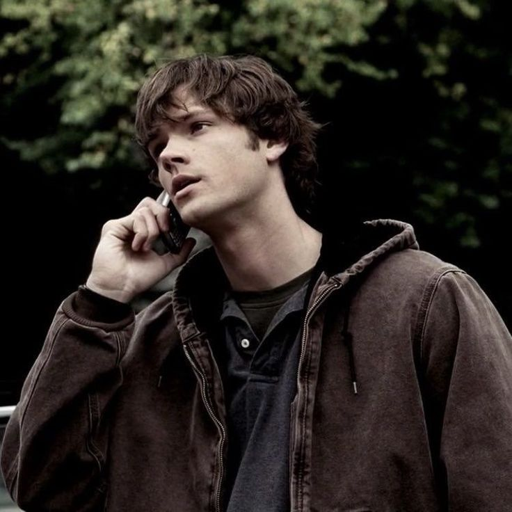
Sam é o irmão mais novo de Dean Winchester. Desde criança, sua vida foi marcada pelo sobrenatural e pelas caçadas realizadas por sua família.
- Irmão de Dean Winchester.
- Filho de John e Mary Winchester.
- Um dos protagonistas da série.
- Possui conhecimentos sobre criaturas e fenômenos sobrenaturais.
Dean Winchester — Jensen Ackles
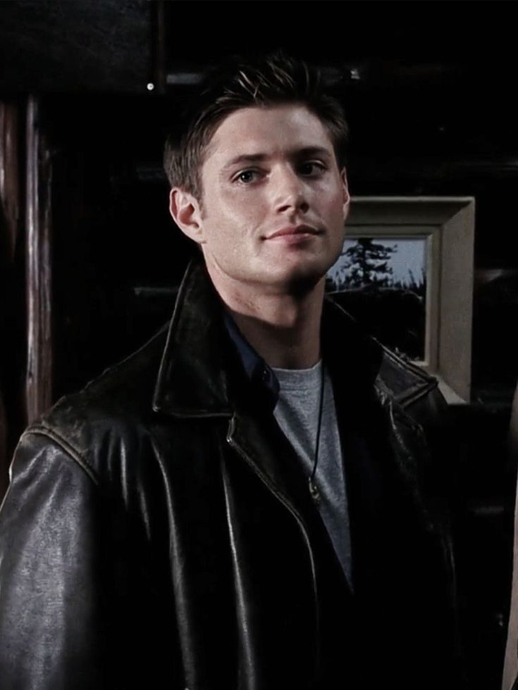
Dean é o irmão mais velho de Sam e um dos principais caçadores da família Winchester. Ele dedica grande parte de sua vida a proteger seu irmão.
- Irmão mais velho de Sam.
- Filho de John e Mary Winchester.
- Um dos protagonistas da série.
- Caçador experiente.
- Dirige o famoso Chevrolet Impala 1967.
John Winchester — Jeffrey Dean Morgan
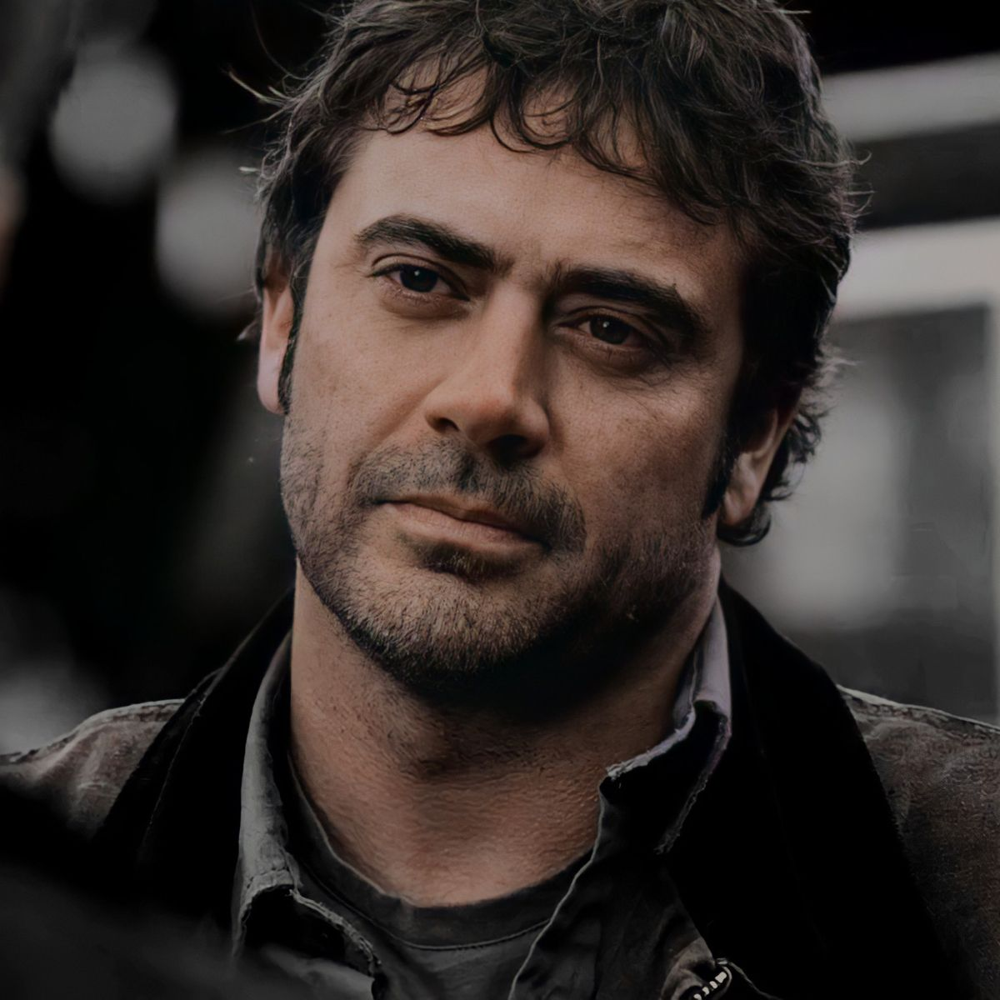
John é o pai de Sam e Dean. Depois da morte de Mary, passou a dedicar sua vida à caça de criaturas sobrenaturais e ensinou seus filhos a sobreviver nesse mundo.
- Pai de Sam e Dean.
- Marido de Mary Winchester.
- Caçador.
- Foi responsável pelo treinamento de seus filhos.
Mary Winchester — Samantha Smith
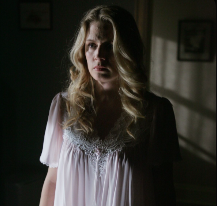
Mary é a mãe de Sam e Dean. Ela fazia parte de uma família de caçadores antes de se casar com John.
- Mãe de Sam e Dean.
- Esposa de John Winchester.
- Descendente de uma família de caçadores.
- Possui experiência com o sobrenatural.
Bobby Singer — Jim Beaver
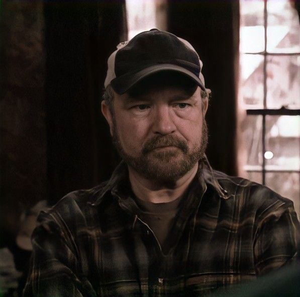
Bobby é um dos maiores aliados dos irmãos Winchester. Ele é um caçador experiente e possui grande conhecimento sobre criaturas e fenômenos sobrenaturais.
- Grande amigo da família Winchester.
- Caçador experiente.
- Conhece diversos tipos de criaturas.
- Ajuda Sam e Dean em diversas caçadas.
Castiel — Misha Collins
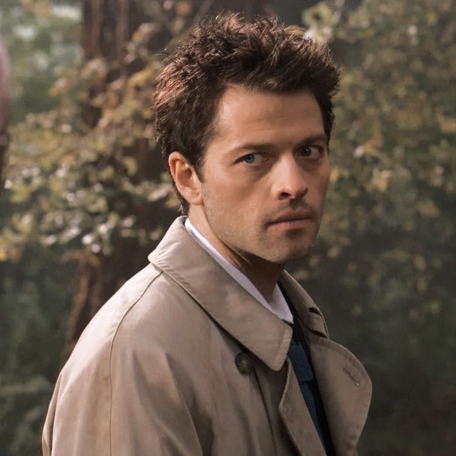
Castiel é um anjo que entra na vida de Sam e Dean e se torna um dos principais aliados dos irmãos.
- Anjo do Céu.
- Grande aliado de Sam e Dean.
- Possui poderes sobrenaturais.
- Desenvolve uma forte amizade com os irmãos Winchester.
Crowley — Mark Sheppard
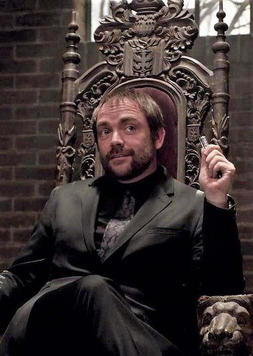
Crowley é um demônio da encruzilhada que se torna uma figura importante na história e chega a ocupar o cargo de Rei do Inferno.
- Demônio da encruzilhada.
- Rei do Inferno.
- Possui uma relação complicada com Sam e Dean.
- Em diferentes momentos, ajuda e enfrenta os Winchester.
Lúcifer — Mark Pellegrino
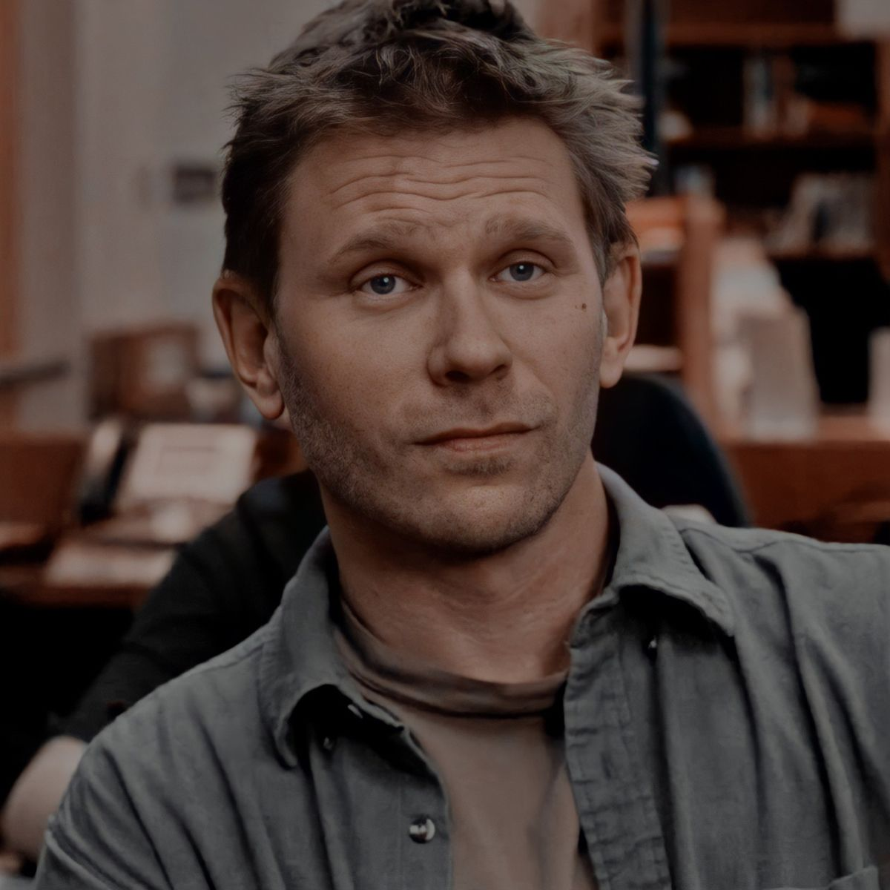
Lúcifer é um dos principais antagonistas da série. É um anjo caído e possui uma relação direta com diversos acontecimentos importantes da trama.
- Anjo caído.
- Um dos principais antagonistas.
- Possui grande poder sobrenatural.
- Tem uma relação importante com Sam Winchester.
Jack Kline — Alexander Calvert

Jack é um nephilim extremamente poderoso que passa a fazer parte da vida de Sam, Dean e Castiel.
- Filho de Lúcifer.
- Nephilim.
- Possui poderes sobrenaturais.
- Desenvolve uma relação de família com Sam, Dean e Castiel.
Rowena MacLeod — Ruth Connell
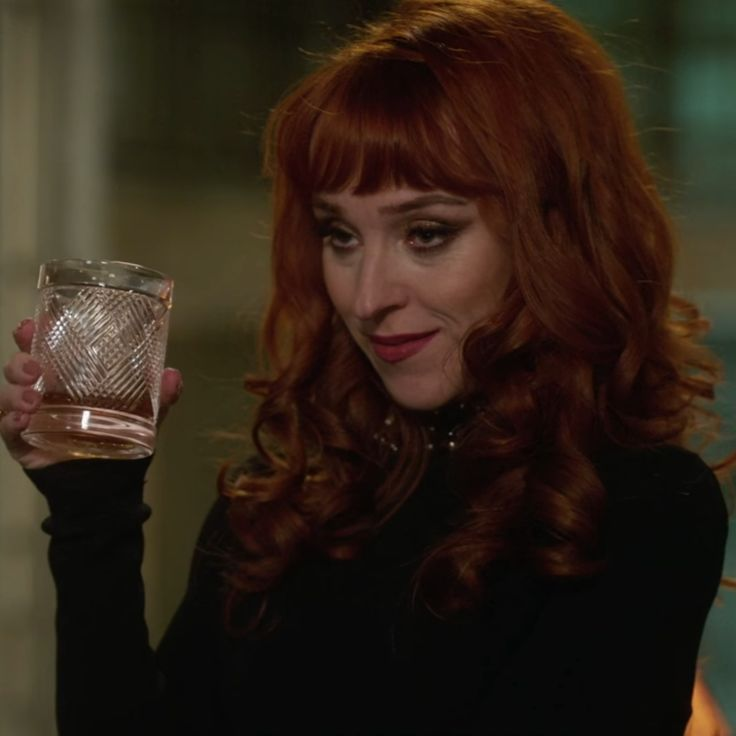
Rowena é uma poderosa bruxa que aparece diversas vezes ao longo da série. Sua relação com os Winchester muda conforme os acontecimentos da trama.
- Bruxa extremamente poderosa.
- Mãe de Crowley.
- Conhece diversos feitiços.
- Possui uma relação complicada com os Winchester.
Gabriel — Richard Speight Jr.
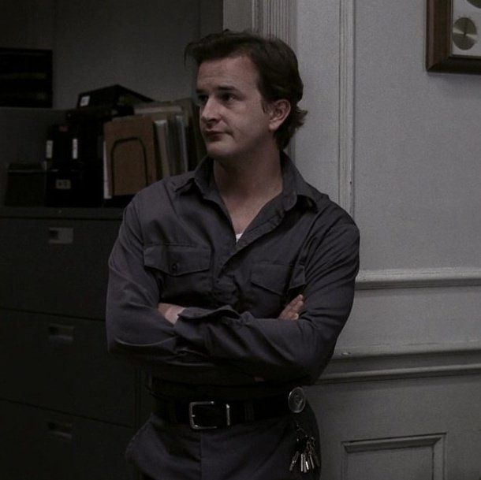
Gabriel é um arcanjo que inicialmente esconde sua verdadeira identidade. Ao longo da história, sua participação se torna importante para Sam e Dean.
- Arcanjo.
- Irmão de Miguel e Lúcifer.
- Possui poderes sobrenaturais extremamente fortes.
- Conhecido por utilizar ilusões e truques.
Michael — vários atores, o mais marcante foi Jake Abel
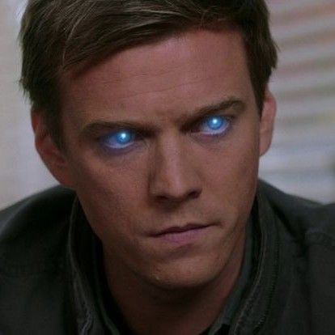
Michael é um dos arcanjos mais poderosos e possui um papel importante nos conflitos relacionados ao Céu e ao Inferno.
- Arcanjo.
- Irmão de Lúcifer e Gabriel.
- Extremamente poderoso.
- Possui uma importante ligação com Dean Winchester.
Cain — Timothy Omundson
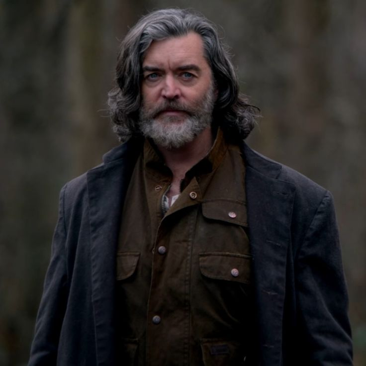
Cain é o primeiro assassino da humanidade e o primeiro Cavaleiro do Inferno. Ele possui uma ligação importante com Dean Winchester e com a Marca de Cain.
- Primeiro assassino da humanidade.
- Primeiro Cavaleiro do Inferno.
- Portador da Marca de Cain.
- Possui uma ligação importante com Dean Winchester.
- É extremamente poderoso.
Charlie Bradbury — Felicia Day
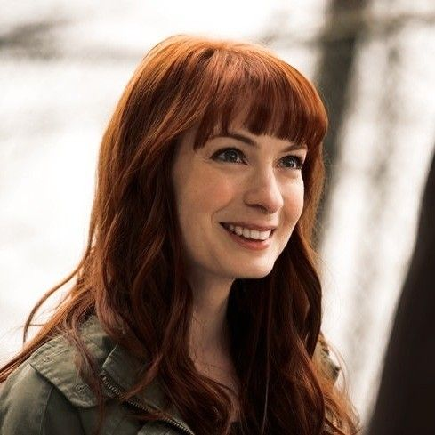
Charlie é uma especialista em tecnologia que se torna uma importante aliada dos Winchester.
- Amiga de Sam e Dean.
- Especialista em tecnologia.
- Participa de diversas caçadas.
- Possui grande importância para os Winchester.
Jody Mills — Kim Rhodes
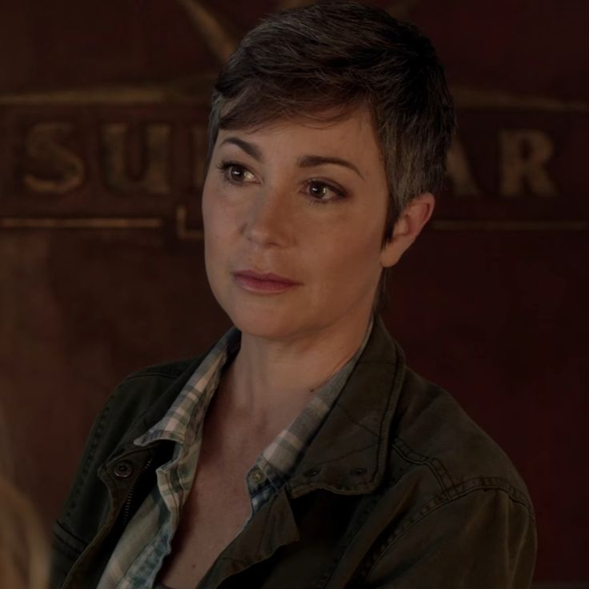
Jody é uma xerife que se envolve com o mundo sobrenatural e se torna uma importante aliada dos irmãos Winchester.
- Xerife.
- Aliada dos Winchester.
- Conhece o mundo sobrenatural.
- Ajuda outros caçadores.
Ruby — Katie Cassidy / Genevieve Padalecki
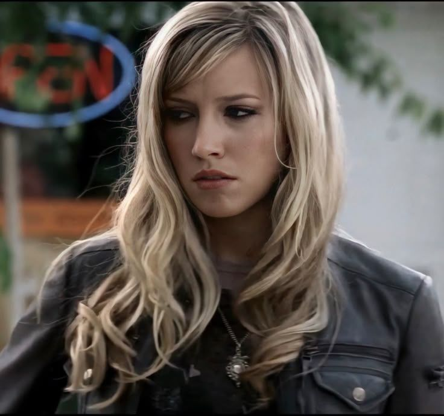
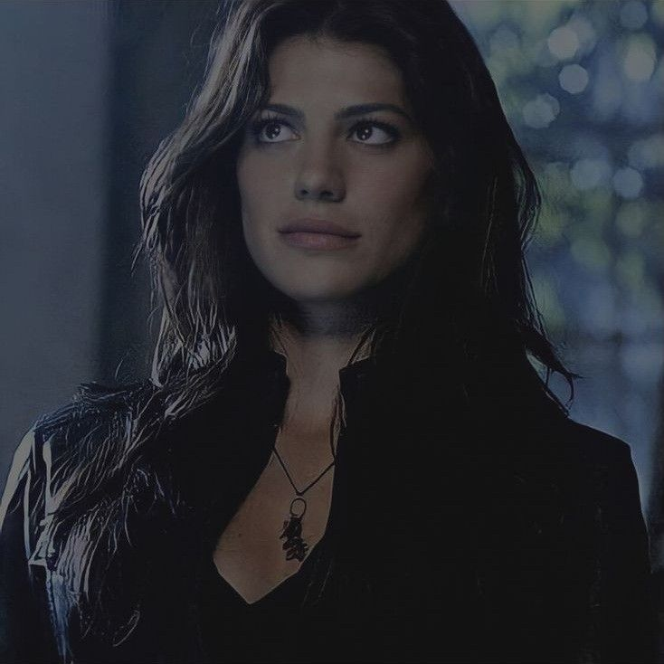
Ruby é um demônio que se aproxima de Sam e desempenha um papel importante durante os acontecimentos relacionados ao Apocalipse.
- Demônio.
- Possui uma relação próxima com Sam.
- Conhece magia e rituais sobrenaturais.
- Tem participação importante na trama do Apocalipse.
Azazel — Fredric Lehne
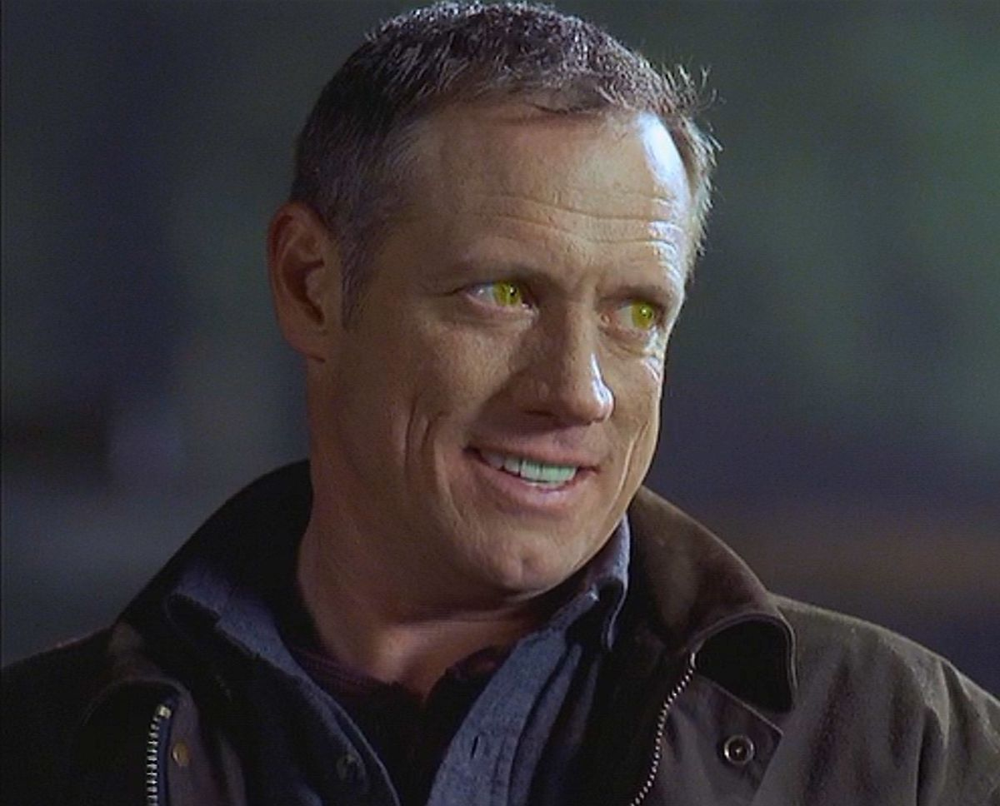
Azazel, também conhecido como o Demônio de Olhos Amarelos, é um dos principais responsáveis pelos acontecimentos que marcaram a infância de Sam e Dean.
- Demônio de olhos amarelos.
- Ligado à história da família Winchester.
- Um dos principais antagonistas das primeiras temporadas.
- Possui grande importância para a história de Sam.